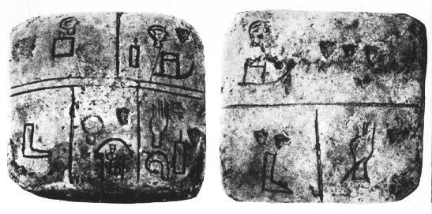
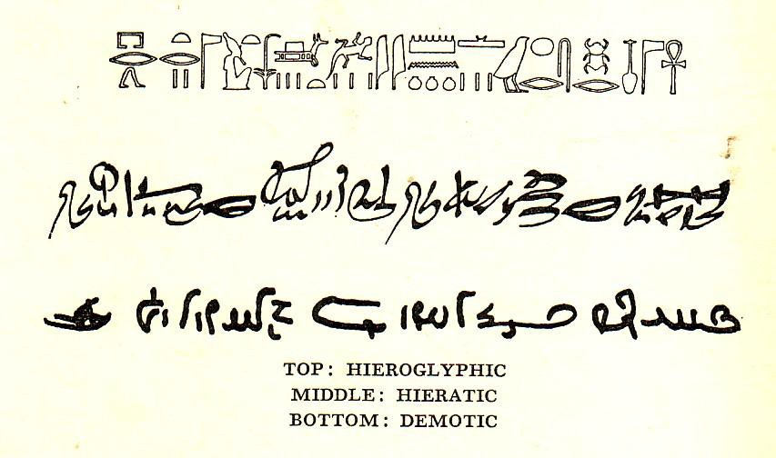
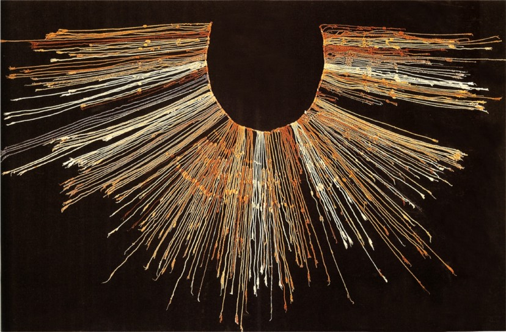

Оформление и презентация текста может визуально выделить вашу статью из десятков подобных. Полезный и интересный контент должен не просто доносить информацию, но взывать к эстетическим чувствам. Поэтому, если к ценности информации добавить надлежащую подачу, результат будет впечатляющим.
Я занимаюсь написанием контента для агентства веб-дизайна. Это не первый, для меня, опыт создания текстового контента, в прошлом я работал техническим писателем в сфере автоматизированного документооборота системы здравоохранения США. Именно этот опыт дал мне представление о форматировании текста и верстке, адаптации к восприятию и о том, как сделать контент или документ визуально приятным.
Относительная предметная длительность (ОПД)
Относительная предметная длительность или relative subject duration (термин Czerwinski, Horvitz, Cutrell, 2001) — это период концентрации внимания пользователя во время выполнения задачи. В нашем случае, во время чтения.
Эксперимент Кевина Ларсона из Microsoft и Росалинд Пикард из MIT показал, что хорошая верстка может улучшить настроение во время чтения.
Положительная реакция на контент, при наличии хорошей верстки, сравнима с просмотром смешного видео. Таким образом, эстетическое восприятие текстового контента можно измерить, а значит, и усилить при помощи верстки.
Немного истории дизайна текста
Письменность — это универсальный графический язык, единственный способ передачи информации в органическом изначальном виде сквозь тысячелетия.
С давних времен, посредством текста, люди стремились передавать информацию о себе. Начертание пиктограмм, которое в отличие от живописи, раскрывает свое значение в контексте и окружении, стало прародителем современного текста.
Табличка из шумерского города Киш — переходный этап между пиктографией и письменным текстом. 3500 г. до н.э.
Пиктографию сменило иероглифическое письмо Древнего Египта. Иероглифы стали сочетать в себе идеограммы, слоговое и фонетическое значение, текст стал гибким и модальным. Причем, существовало 2 вида текстов — церемониальные в виде графических иероглифов с детализацией и эстетикой, и упрощенная скоропись — иератика.
Один и тот же текст, написанный в египетской иероглифике и иератике, соответственно.
На другом конце света, инкская цивилизация использовала узелковую текстовую кодировку — кипу, не расшифрованную до конца и поныне. Известно, что цвета применялись для обозначения классов объектов, создавались смешения цветов и последовательные серии. Длина нитей, количество. Расположение и виды узлов образовывали повествовательные, а также арифметические, топографические и календарные тексты.
Пример узелкового письма кипу. 3000 г. до н. э.
Шумерская клинопись стала первым фонетическим письмом. Методом клинописи, таким образом, стали записываться художественные произведения, например, “Эпос о Гильгамеше”. Переход к системе “символ-звук” положил основу дальнейшему развитию текста.